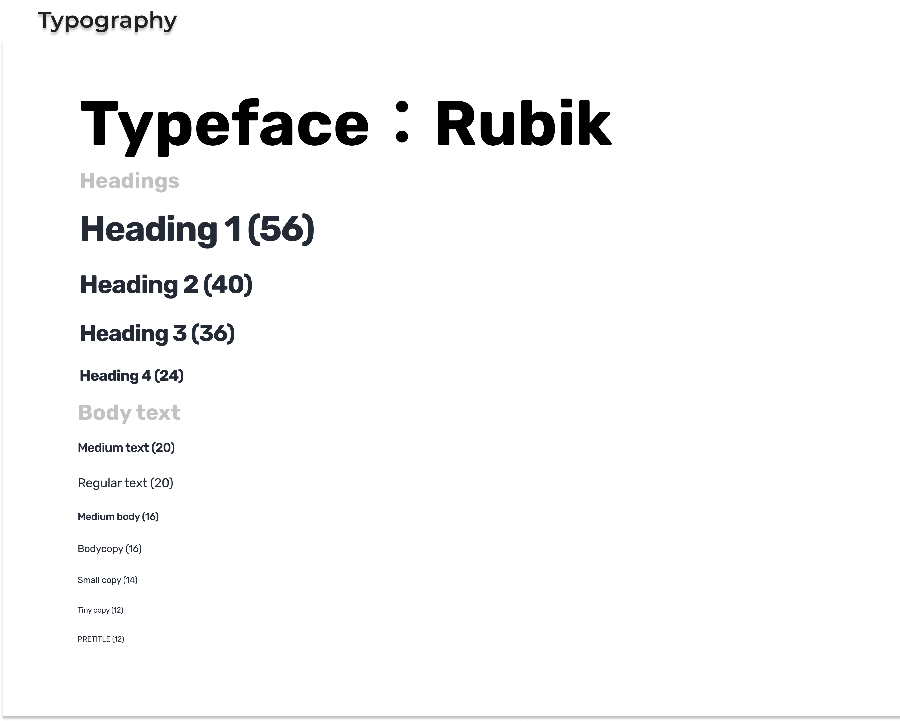
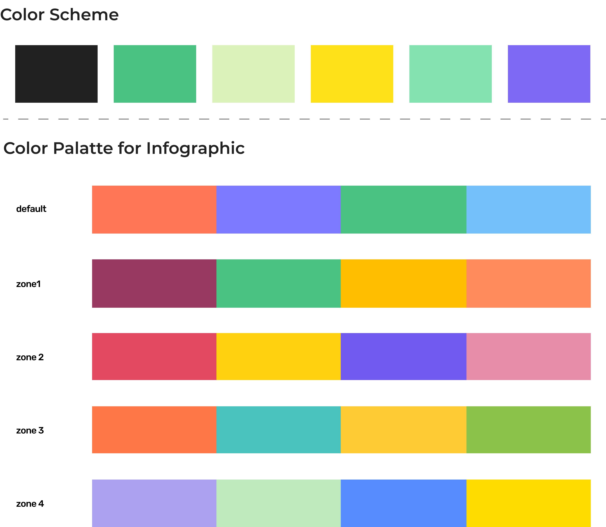
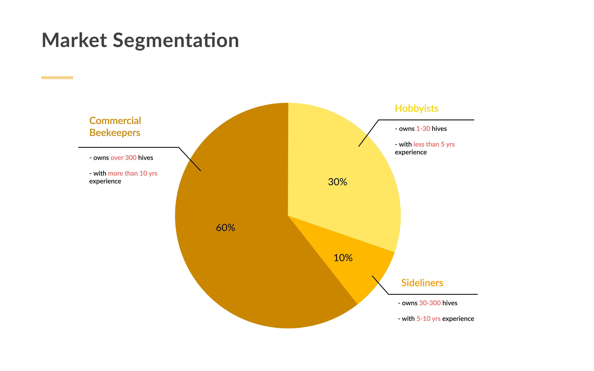
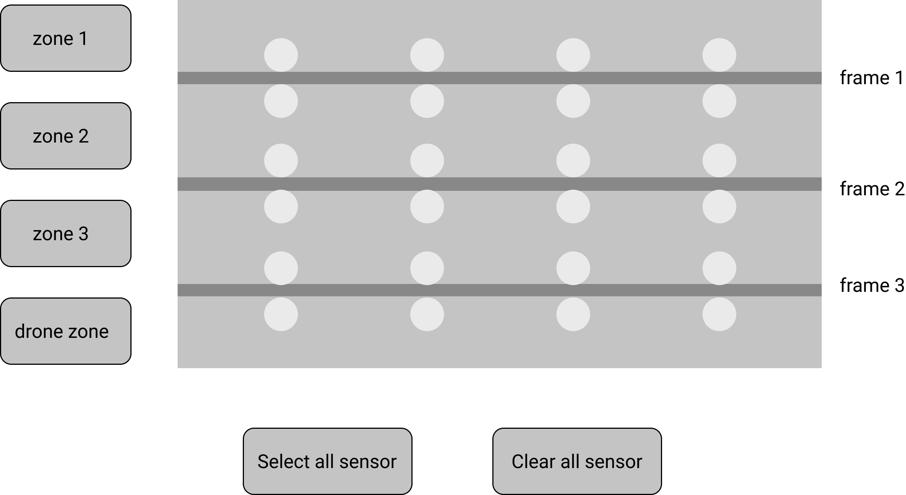
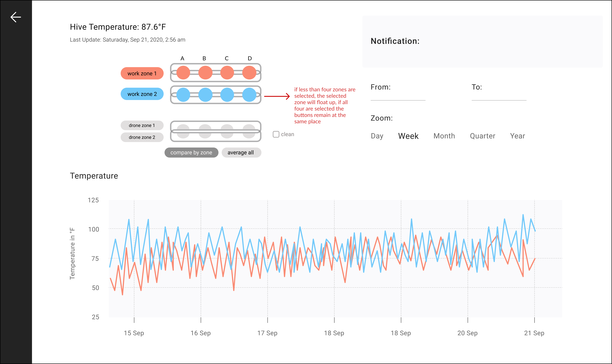
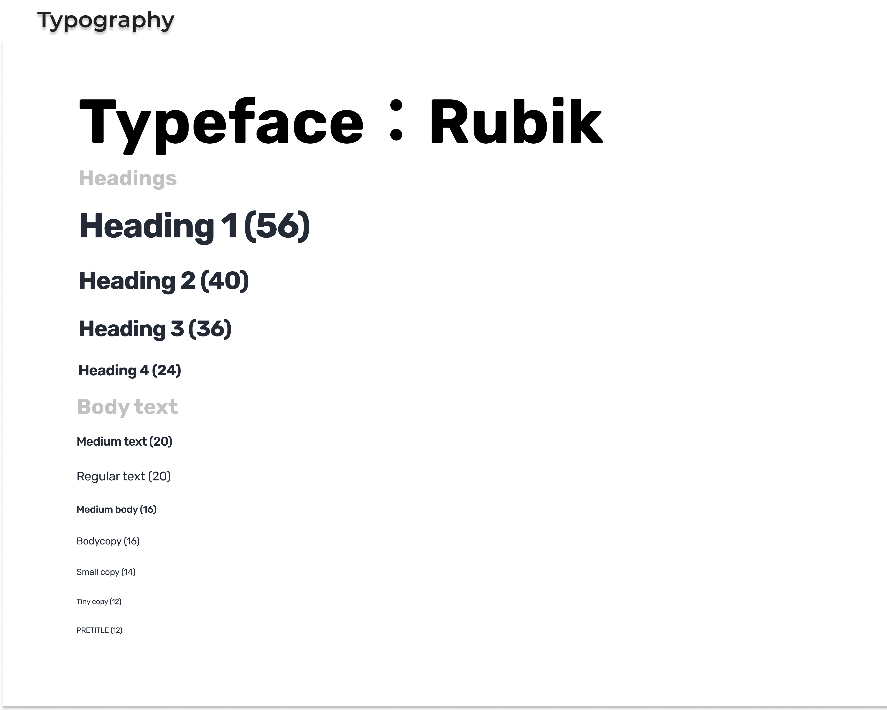
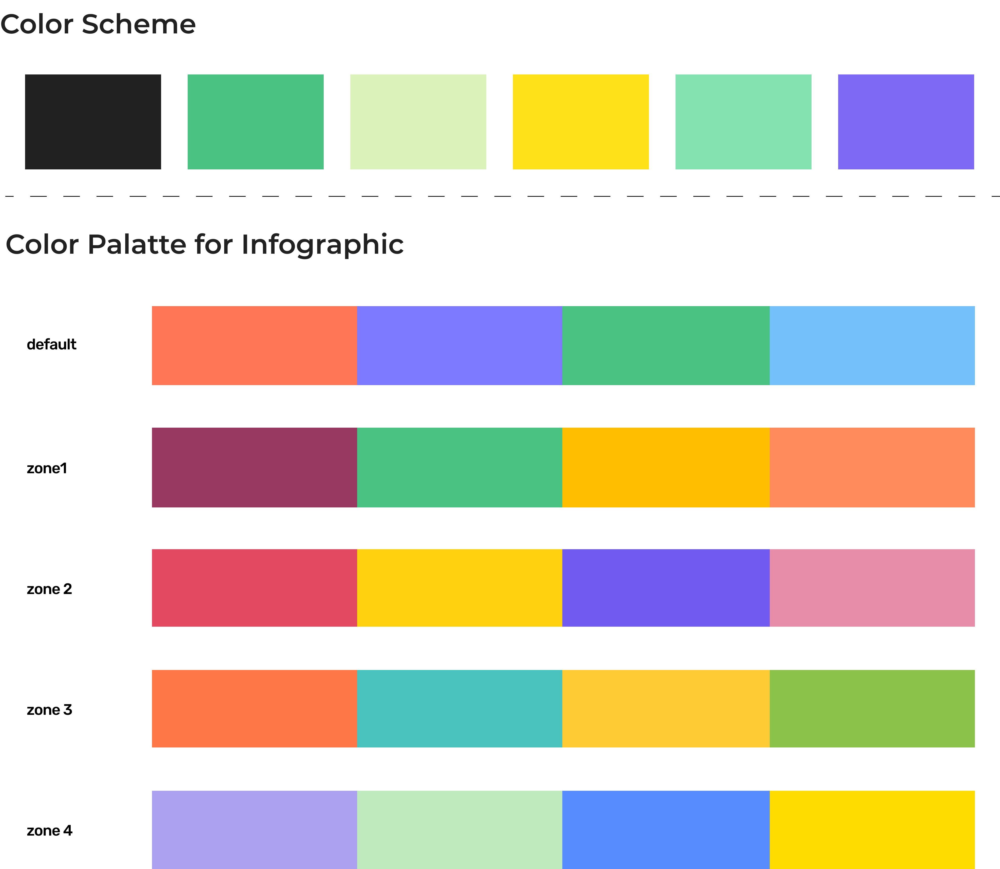
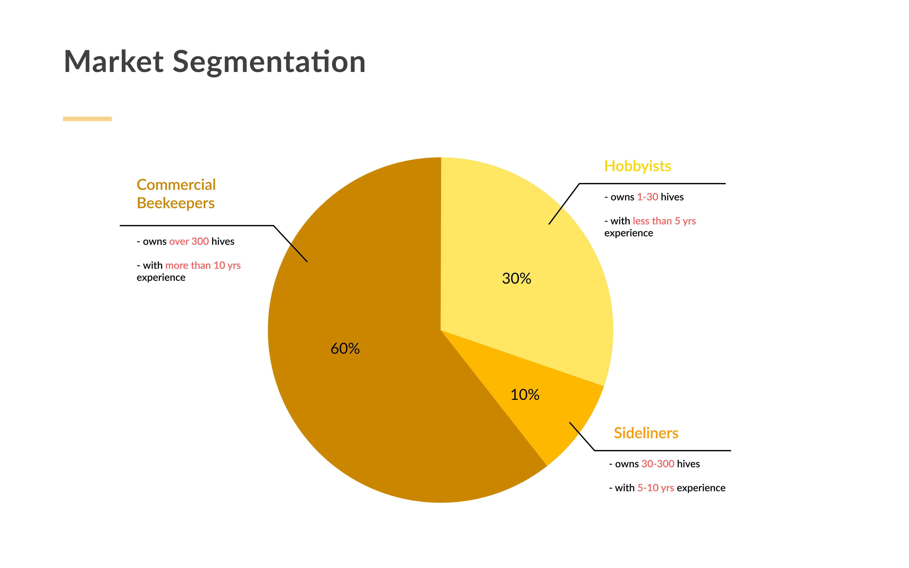
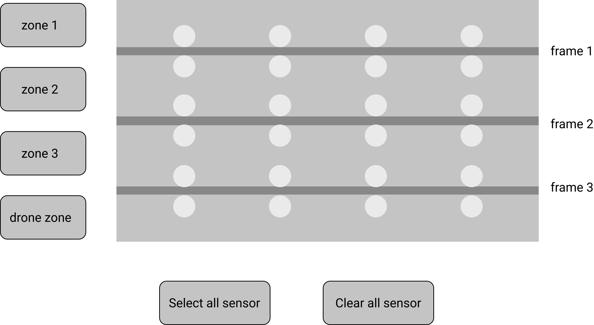
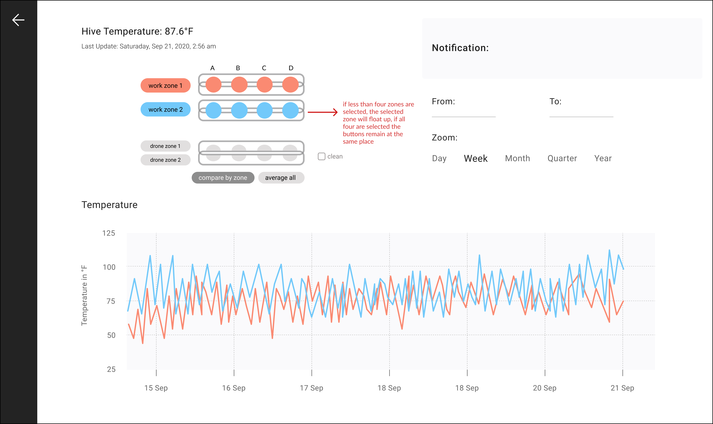

HoneyCo Beekeeping
A group of designers who never raised honeybees before take on the challenge of designing a beekeeping dashboard.
Project Gallery
 









Project Impact
At this point, we would have done a round of usability tests to validate our design, specifically on user comprehension of the spatial model and the graph interface’s learning curve. However, our client requested that we hand over the solution fast so they can continue to iterate upon the solution among the founders and the engineering team.
We maintained contact with the company for some time after shipping our design. Although we did not receive detailed feedback from the client, the majority of our design was well-received by both the limited user base of HoneyCo and the internal team. Upon further research and testing which I did not participate in, additional features such as a heatmap view and notepad were added to better suit a beekeeper’s real-life workflow.